epic
WILDLIFE
journeys
epic
WILDLIFE
journeys
As a biology graduate and scientist, I thought I had a pretty good understanding of the Earth’s natural history. When I first arrived in Western Australia, though, I was in for a huge surprise - I may as well have been on another planet. I couldn’t recognise a single species of plant and there was a host of peculiar marsupials to get to know.
Indeed, Western Australia’s wildlife is simply astonishing (the southwest ranks among the world’s 34 biodiversity hotspots), boasting a treasure trove of species, from the strange to the spectacular. Particularly enthralling is its marine life, and over the coming pages we’ll introduce just some of these gems: bottlenose dolphins in Perth’s Swan River, humpback whales off Rottnest Island, whale sharks around Ningaloo Reef and dugongs in Shark Bay (both of which are World Heritage Sites), not to mention the breathtaking and still largely untrodden wilderness in the Kimberley. Western Australia is home to far more than just kangaroos. It’s a whole new world, and it’s full of surprise and delight.
Imagine standing in the sunshine on the gently rolling deck of a boat, shading your eyes as you stare at the ocean. You are keenly searching for a shape, when the water a mere 30 metres from your craft erupts as a massive dark body rockets skyward for an awe-inspiring moment before crashing back. You are there to witness the annual phenomenon of humpbacks and southern right whales travelling up the coast of Western Australia to mate and give birth in the Kimberley’s tropical waters. The whales oblige with a show to take your breath away.
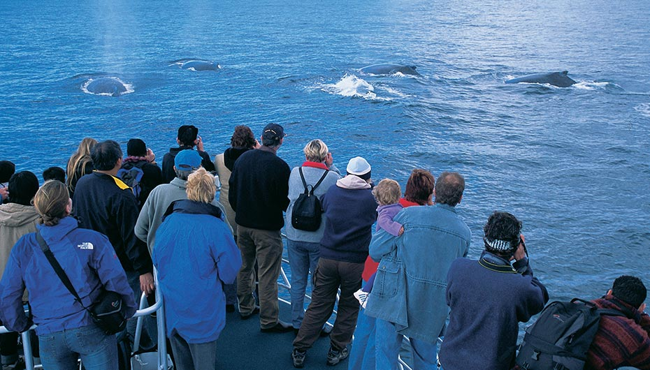Spot the difference
Humpbacks are renowned for their apparently playful temperament, so you could almost feel that their frequent breaches, as they leap bodily out of the water and their spy-hops as they pop their heads up vertically, are designed to charm expectant tourists. Maybe they do put on a show, but it’s not just for our benefit, it is part of a complex, fascinating social behaviour.What is so very impressive is their sheer size: humpback whales can grow to 18m long.
The southern right whale, which also moves north in winter, is given to similar displays. The females appear along Western Australia’s southern coast about May, some giving birth within sight of land. Growing up to 17m and weighing up to 80 tonnes, these rotund, bus-sized whales are distinguished by white blotches on their dark skin, concentrated around the head, and individual to each animal. The name came from whalers who considered it the ‘right’ whale because it was slow and easy to hunt.
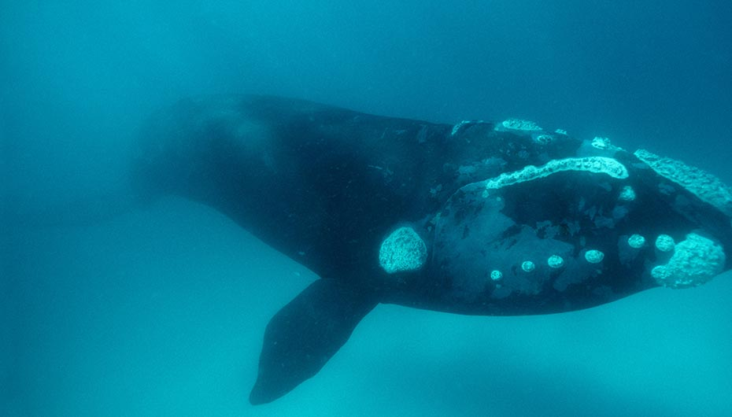Both whale species can be seen in Western Australia’s South West from May to December.Cruises operate from Perth, Dunsborough, Augusta and Esperance as well as Albany, where the last Australian whaling station is now a fascinating whale museum.It’s also possible to watch from vantage points on land, between Cape Naturaliste and Cape Leeuwin, and they rest and play in the waters of Flinders Bay between May and September.
Camden Sound, in the Kimberley region, is a major humpback breeding ground in August. There is no road access to the coast but mating and calving humpbacks can be seen from shore at Pender Bay on the Dampier Peninsula. Snorkelers there sometimes hear them singing. While around Ningaloo Reef there’s a trial from August to October to allow people to swim with whales under strict regulations.
One thing is sure, if you want to witness a wild whale then Western Australia offers a fantastic chance. There can be no greater thrill than seeing some of the world’s biggest animals up close in such a beautiful setting.
NEED TO KNOW
Discover the World offers a package based at the luxurious Sal Salis wilderness camp with the chance to view and even swim with Ningaloo’s humpback whales. 3 nights from £1,603 pp (twin share, excl flights) visit www.discover-the-world.co.uk
Polls to find the world’s best wildlife-watching adventures invariably feature snorkelling with whale sharks. Everything about these gentle giants is superlative – they average 7–8m long, their huge jaws span up to 1.5m and they can strain 6,000 litres of seawater an hour. Yet despite their size, these filter-feeding leviathans are astonishingly graceful and placid. And there’s no better place to meet them than Ningaloo, a two hour flight from Perth in Western Australia.
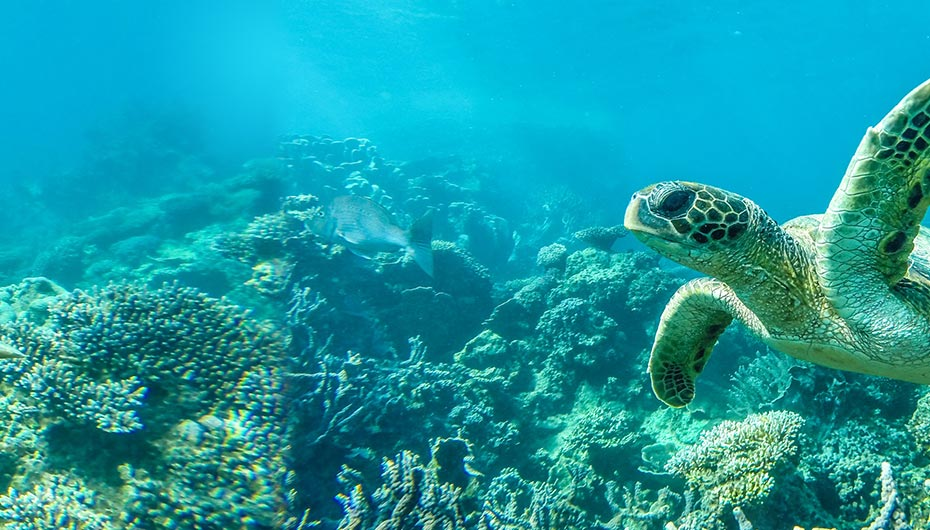Stretching 260km, the reef has been declared a World Heritage Site in recognition of its incredible marine biodiversity, and in particular it has become legendary for reliable sightings of whale sharks from mid-March, with the prime season April to July.
Ningaloo has an enviable reputation for the quality of its responsible whale shark tourism, with numerous tour operators based in Exmouth offering day trips to snorkel with the sharks. Boats follow a strict code that sets out how many snorkellers are in the water and how close you can swim. A spotter plane locates the sharks each morning, so boats are able to guarantee sightings.
Ningaloo is also famous for its manta rays, present year-round, with numbers peaking from May to September. To mingle with these serene, approachable fish is an unforgettable experience and encounters with half-a-dozen at a time are not uncommon at Ningaloo. The best place to see them is Coral Bay, a snorkeller’s paradise about 150km south-west of Exmouth – a leisurely three-hour drive through the bush. Wildlife you might spot en-route includes red kangaroos, emus and wedge-tailed eagles (Australia’s largest bird of prey).
One of the great attractions of Ningaloo is that it is a fringing reef. So you can walk in off the white-sand beaches anywhere you like and start snorkelling straight away in the shallows, marvelling at the coral gardens and myriad rainbow-coloured fish.
While snorkelling you also have an excellent chance of spotting turtles, with five of the world’s seven marine species found here. Green, loggerhead and hawksbill turtles are what you’re most likely to see, while a healthy population of about 30,000 humpback whales migrates along the Western Australian seaboard between July and October. This year the State trialled its first licences for swimming with humpbacks at Ningaloo Reef.
Above all, Ningaloo has managed to retain its undeveloped, wild nature. There’s pristine coral, crystal-clear water and a warm welcome waiting, not to mention the chance to meet some of the biggest creatures in the ocean. Just don’t expect the crowds.
NEED TO KNOW
Discover the World offers a road trip from Perth to Exmouth, from £1,052 pp (twin share, excl flights) for 11 nights. visit www.discover-the-world.co.uk
Cycle Rottnest Island
“Rotto”, as the locals call it, is an island paradise just a 30 minute ferry ride from Perth. An A Class Nature Reserve, it’s home to 63 secluded beaches, 20 bays, and 50km of road to explore by pedal power. Free-wheel between beaches before exploring Rottnest’s natural underwater sculptures, 400 species of fish and 20 species of coral. Watch for stingrays in the shallows of Thomson Bay or spot bottlenose dolphins in Salmon Bay. And don’t forget to meet the quokkas, unique to Western Australia!
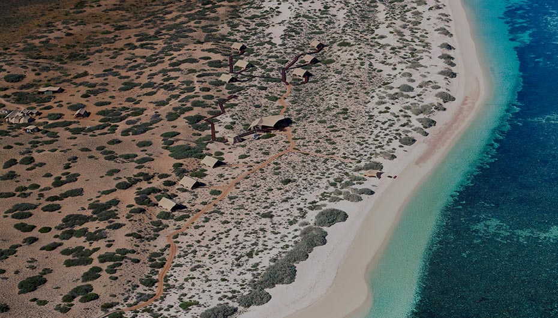Cruise The Kimberley coast
The Great Kimberley Marine Park will soon be one of the largest interconnected system of marine and terrestrial parks in Australia, covering five million hectares. Here one of the world’s largest humpback whale nurseries has been discovered, where 30,000 animals come from Antarctica to breed in August. On an expedition cruise you can explore islands with fringing coral reefs, mangrove-lined creeks and bays with dugongs, sawfish and turtles. The cruise ships are small enough to glide under cascading waterfalls and navigate narrow turquoise rivers. Helicopters and speedboats are on hand to whisk you over the world’s only Horizontal Waterfalls and up to the stunning Montgomery Reef.
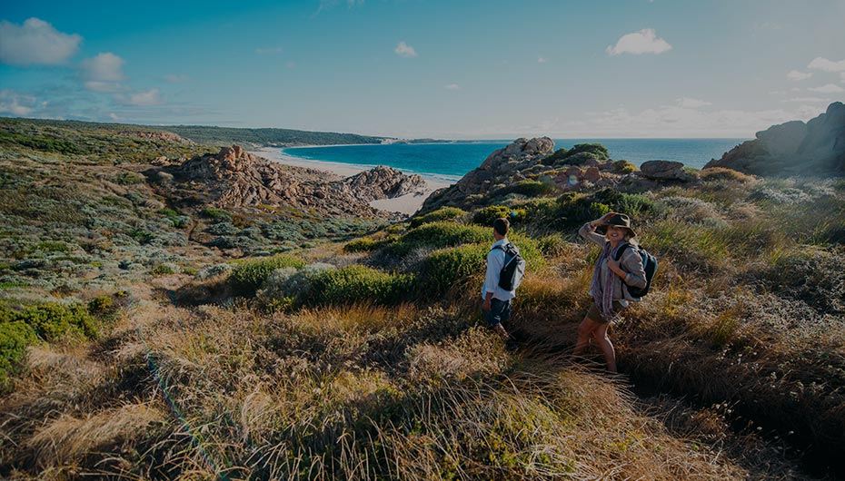Walk The Cape to Cape Track, Australia’s South West
The Cape to Cape Track is a 135-kilometre trail meandering along the stunning coastline of Australia’s South West. You’ll alternate spectacular cliff-top views of dolphins and humpback whales cavorting close to shore, with inland loops which take in towering karri forests. This is Australia’s only biodiversity hotspot, with everything from ospreys, red-tailed black cockatoos and purple-crowned lorikeets to western brush wallabies, kangaroos and brush-tailed possums. The whole trail takes five days but there are a number of guided options which showcase the highlights in one or two days.
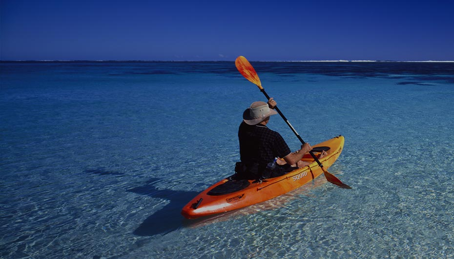Kayak Ningaloo Reef
A new sea-kayaking trail is being developed along the World Heritage-listed Ningaloo Reef, the longest fringing reef in the world and one of Australia’s best wildlife spots. The trail, run by the Department of Parks and Wildlife, currently consists of 10 moorings and provides an easy way to experience the reef, pinpointing locations to paddle to and jump in for great snorkelling. Along with turtles there are manta rays, over 500 species of tropical fish and colourful coral gardens. Hire equipment and dive in on your own, or follow a local guide for an amazing underwater experience.
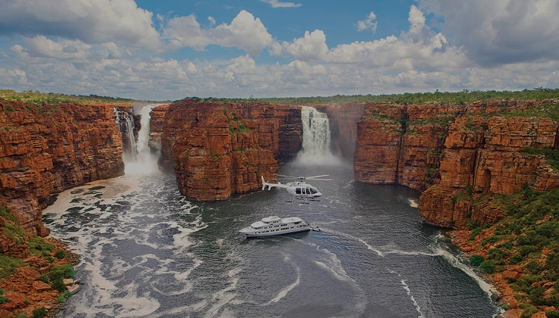4WD The Gibb River Road
This is the Outback of dreams. Rust-red gorges, thundering waterfalls tumbling into crystal-clear waterholes, Livistona palm forests sheltering natural hot springs, and cloudless skies. The Kimberley’s Gibb River Road follows an old stockman route through the heart of the region. You can tackle it yourself in a 4WD or get a knowledgeable local guide to whisk you around, staying at exclusive safari camps. This will leave you free to spot wallabies, brolgas, herons, kites and freshwater crocodiles in their natural habitat, as well as admiring ancient aboriginal rock art sites and the World Heritage-listed Bungle Bungle Range.
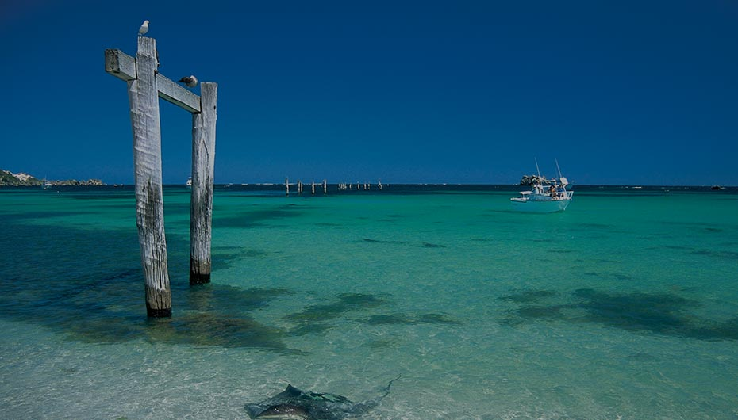JANUARY
what ORCAS
where BREMER BAY
From January to April this remote spot hosts the largest known group of killer whales in the Southern Hemisphere. A leak from a hydrocarbon pocket under the seabed sparks a food chain also attracting giant squid, sperm whales and sea birds.
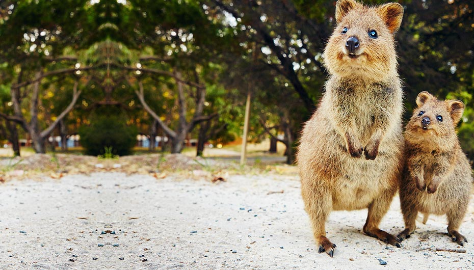FEBRUARY
whatQUOKKAS
whereROTTNEST
These furry, kangaroo-like marsupials can only be found in Western Australia. The best place to spot them is on Rottnest Island, where they charm visitors with a willingness to interact.
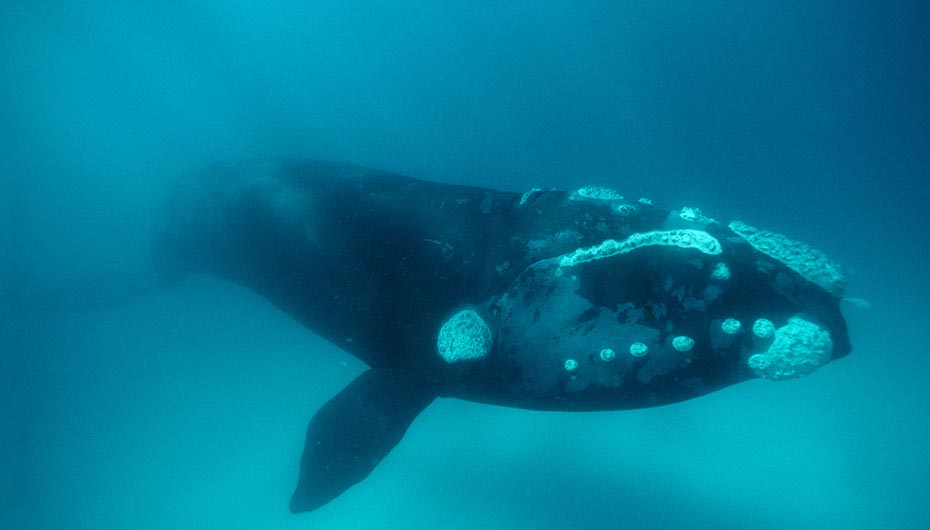MARCH
whatCORAL SPAWNING AND WHALE SHARKS
where NINGALOO
One night in March the waters of Ningaloo Reef come alive as 200 species of coral spawn. This attracts krill, that draws in larger fish like the giant whale shark which basks on the reef from March to July.
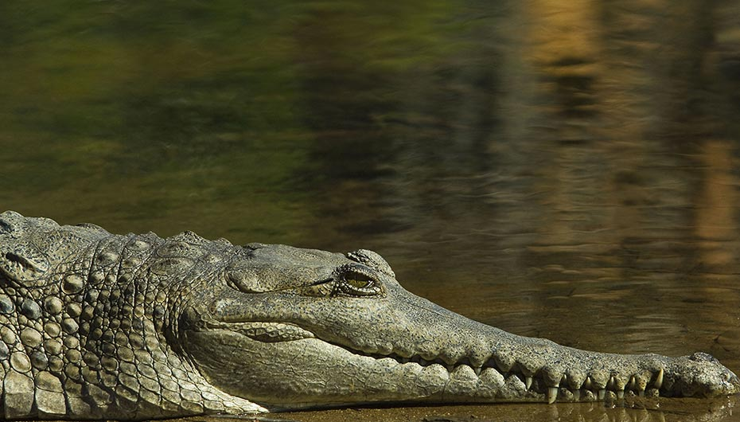APRIL
whatCROCODILES
whereTHE KIMBERLEY
Saltwater and freshwater crocodiles can be seen in the Kimberley in the dry season (April to October), and in Windjana Gorge you’ll find fossils in the gorge walls, fruit bats and fresh water crocs around the waterhole.
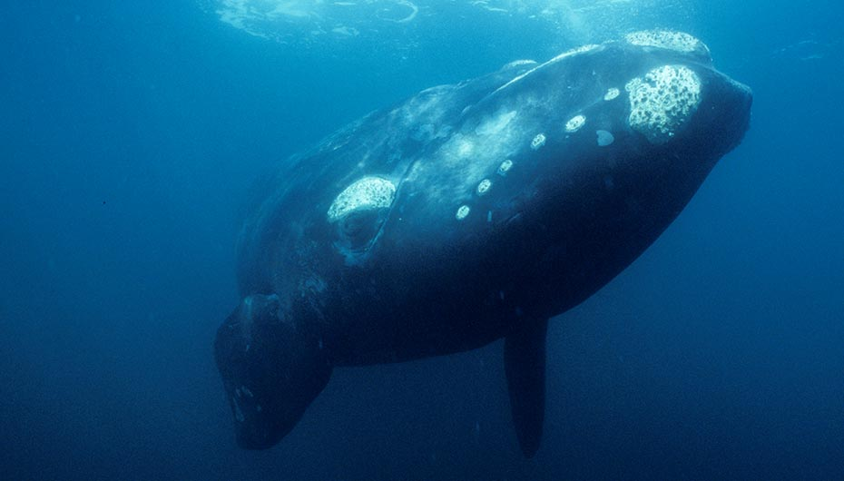MAY
whatWHALE MIGRATION
whereSTATE-WIDE
May sees the humpback and southern right whale migration from the Southern Ocean to breeding grounds in the Kimberley waters. Cruises and land-based lookouts operate May-December and you can swim with them at Ningaloo Reef August-October.
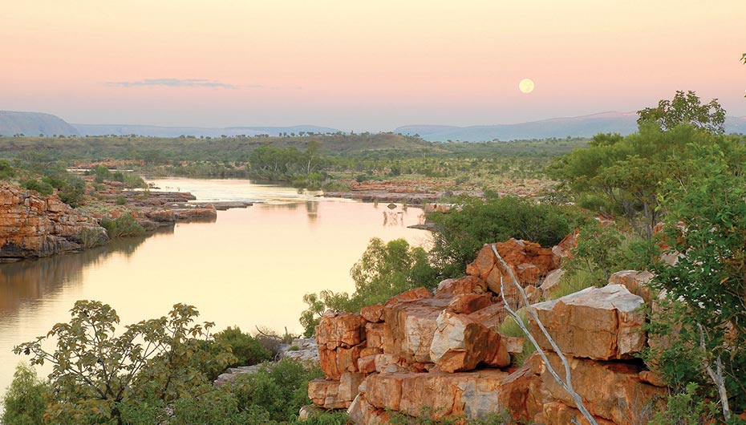JUNE
whatSTAIRCASE TO THE MOON
whereTHE KIMBERLEY
From April to October the moon rises over mudflats and creates an optical illusion of stairs. Best seen from Roebuck Bay in Broome.
JULY
whatWILDFLOWERS
whereSTATE-WIDE
From Kalbarri National Park on the Coral Coast to the forests of the South West, wildflowers are abundant from July. Fitzgerald National Park is a top spot from September to November.
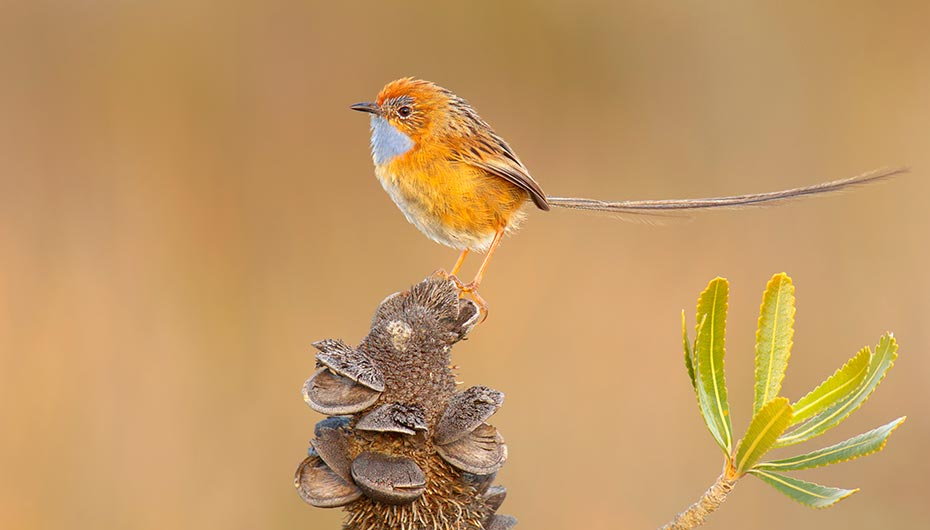AUGUST
whatMIGRATORY BIRDS
whereSTATE-WIDE
Broome’s Roebuck Bay is home to 175,000 shore birds until November. Wetlands in the Kimberley host dozens of species. Rare Gouldian finches inhabit the Dampier Peninsula.
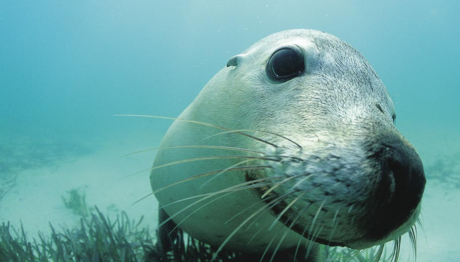SEPTEMBER
whatSEALS & SEA LIONS
whereROCKINGHAM
Rare Australian sea lions are easily found in the Shoalwater Marine Park, outside Perth, and at Jurien Bay, the Abrolhos islands, Albany and Esperance, along with New Zealand fur seals.
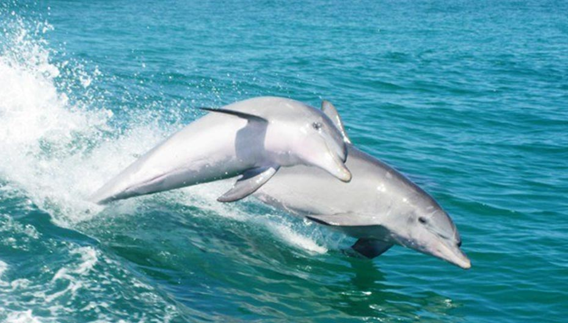OCTOBER
whatDOLPHINS
whereSTATE-WIDE
Koombana Bay in Bunbury is a social spot for 100+ bottlenose dolphins. Learn about them at the Dolphin Interpretive Centre daily to April, or swim with them at Rockingham. Monkey Mia is another hotspot where rangers supervise beachfront interaction.
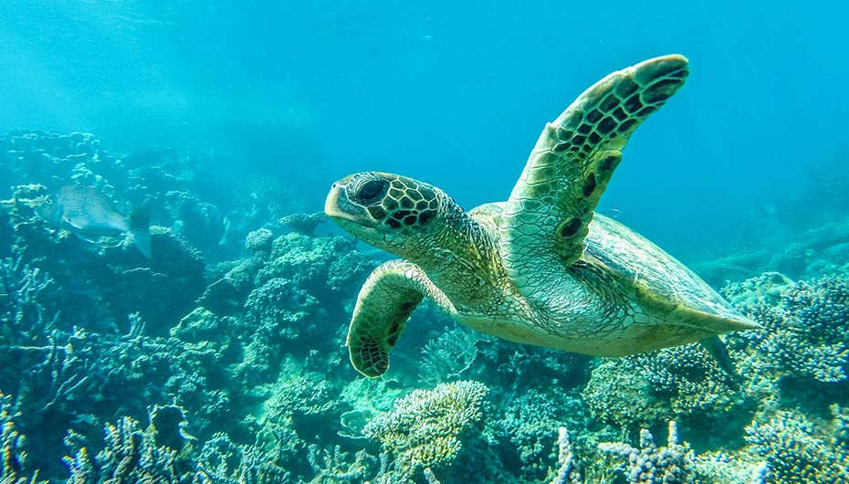NOVEMBER
whatKANGAROOS
whereSTATE-WIDE
For the iconic ‘big red’ head to Shark Bay, while western greys are easily spotted in the South West. Don’t miss Lucky Bay where they laze about on Australia’s whitest beach.
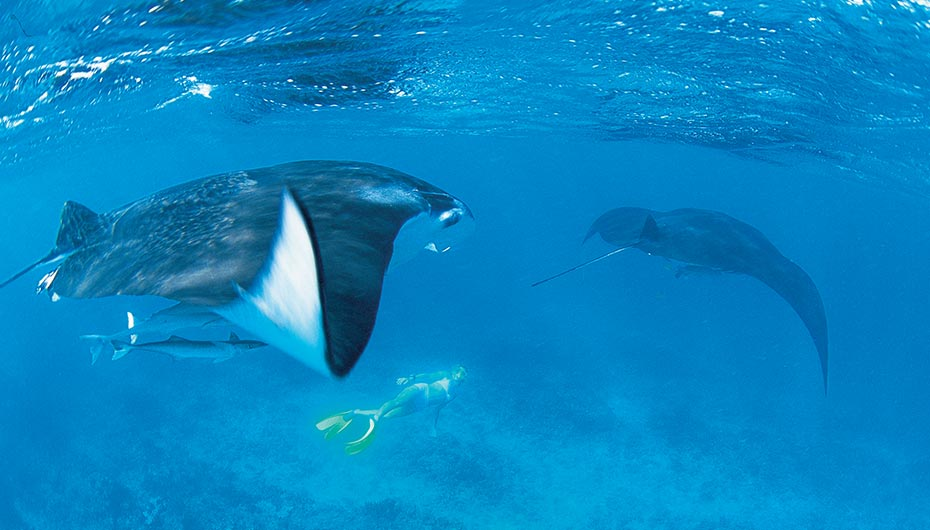DECEMBER
whatTURTLES
whereNINGALOO & BROOME
December to February view egg-laying and hatching of green, loggerhead, hawksbill and flatbacks on Ningaloo Reef. More turtle rookeries are in the Dampier Archipelago, on Broome’s Eighty Mile and Reddell Beaches.
YEAR_ROUND
whatMANTA RAYS
whereCORAL BAY
Whichever month you visit Coral Bay, these majestic creatures can be seen gliding by elegantly and barrel rolling as they scoop plankton and krill from nutrient-rich waters.
Tailor made holiday specialists Discover the Worldoffer a wide choice of itineraries and experiences throughout Western Australia. Explore forests and wineries, rugged outback landscapes and pristine coral reefs surrounded by a variety of marine wildlife. Be guided by their30+ years’ experience to plan your own WA holiday,whether by self-drive, rail, cruise or small group tour.Below are just a few of their favourite itineraries,and you can find the full collection on theirwebsite.
NINGALOO AND SHARK BAY DISCOVERY
Discover the very best of the spectacular Coral Coast. Search for whale sharks or humpback whales, turtles, dolphins, dugongs, manta rays and more.
Highlights
- Visit two UNESCO World Heritage Sites – Shark Bay and the Ningaloo Coast
- Discover Shark Bay’s flora, fauna & indigenous history with a local guide
- Marvel at Hamelin Pool’s ancient stromatolites
- Snorkel at colourful Ningaloo Reef and perhaps even swim with a whale shark
WHALES AND WINE OF THE SOUTH WEST
Enjoy close encounters with whales, dolphins and more as you explore rugged coastlines, lush green forests and fertile vineyards. Uncover the history of WA’s first settlement and visit the Southern Hemisphere’s longest jetty.
Highlights
- Cruise Shoalwater Islands Marine Park with dolphins, penguins and sea lions
- Join a whale watching cruise in search of humpback and southern right whales
- Take a guided winery tour around Margaret River’s favourite vineyards
- Explore national parks and deserted beaches at leisure
KIMBERLEY COMPLETE
Explore Australia’s last frontier: the untouched Kimberley region. This fully escorted small group 4WD tour takes in breath-taking gorges, hidden caves, secret water holes and an array of spectacular wonders including the Bungle Bungles and remarkable Mitchell Falls.
Highlights
- Travel the renowned Gibb River Road through the wild heart of the Kimberley
- Explore spectacular Windjana Gorge and the caves of Tunnel Creek
- Admire the unmistakeable Bungle Bungles of Purnululu National Park
- Watch the sun set over Cable Beach and the Indian Ocean
or call their team of Aussie Specialists on 01737 214 288